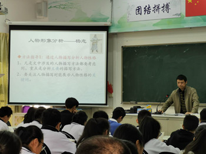
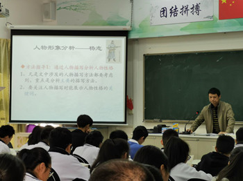

正君
之教

依据国家《中学德育大纲》《中小学文明礼仪》《中国学生素养2016》和深圳中学德育目标要求，结合6班学生年龄特点和班级定位，制定6班初三阶段德育发展方向，并以此开展和评估班级工作，以期能够增进家校理解与合作，为培养具有现代特质的中学生提供发展性支持。
（一）价值观教育：关于核心价值观的体系构建是一个意义深远的行动，关乎孩子的生命状态和民族的未来。本学期将着重构建的是：“竞争”，主要内容是：挑战、勤敬、坚持、超越。
（二）学习小组： 班级是一个学习团队，由仁义礼智信五个学习小组构成，初三第一阶段要发挥好小组合力，在竞争中共同进步。
（三）学科管理： 把各学科的管理分为四个学段，不同学段进行考核;针对性要强，让每一个学生都在实现个人目标的征途上奔跑。
（四）综合能力 ：在思维能力、表达能力、动手能力、协作能力等方面呈现出不一般的素质。
（五）文化生活： 家长群体将发挥主导作用和资源优势，举行与学科有关的互动活动，深化学习的情趣。同时还合力打造亲子文化。
当我们把老师、同学、家长三个群体融合在时，我们会发现这是一种十分美好的机缘，我们可以创造更有意思的生存状态。只要我们都充分尊重，十分珍惜，万分努力，就能争得百分的满意。
目标：立德树人，全面发展
★初步培养全球视野、家国情怀、共情意识
★深圳中学学生特质五维度：荣誉、责任、习惯、思维、卓越
●培养尊重自己、尊重他人、尊重责任、尊重优秀之竞争品德
●培养组建团队、制定团规、依规办事、协调关系、解决问题的能力
●尊敬父母师长，遵守公共文明礼仪，关注细节，感受情义
●适应初三备考阶段心理变化，情绪与行为的自控能力有所发展
模式：学习型团队
口号：挑战竞争 青春无悔
结构：班主任----团支部---班委会----学习小组-----家长群
团支部——书记：徐宁馨 组织委员：梁云天 宣传委员：钟欣彤
班委会——班长-雷俪 副班长-梁云天 学习委员-陈采玥 卫生委员-张晨 宣传委员-朱真 钟诗琪
体育委员-李坪燃 文娱委员-郑晨亮 生活委员-潘琪子慧 电教管理员-易昀霖 静校管理员-汤振阳
学习小组：仁（曹心爱）、义（夏浩涵）、礼（袁妙莹）、智（梁竣）、信（钟欣彤）
家委会——
会长：曹心爱爸爸
学习部：徐宁馨妈 陈采玥妈 梁云天爸
文体部：
财管部：
1、期末考试情况通报
总分前十：
徐宁馨（416.1）
梁云天、陈采玥、钟欣彤、杨润彤、汤振阳、陈锦浩、张晨、黄中睿、张弛斌。
单科级次250名之前者：
语文优良者：钟欣彤、梁云天、汤振阳、雷俪、徐宁馨、陈采玥、杨润彤、林怡、黄中睿、朱真、易昀霖。
数学优良者：陈采玥、徐宁馨、陈锦浩、李嘉浩、梁云天、杨润彤、钟欣彤、汤振阳、潘琪子慧、林怡、余凯、李坪燃、黄中睿、张晨。
英语优良者：徐宁馨、梁云天、汤振阳、杨润彤、陈锦浩、雷俪、钟欣彤、严杏琳、袁妙莹、陈采玥、曹心爱、朱真、黄中睿、钟宇轩、张弛斌、梁竣。
物理优良者：梁云天、徐宁馨、陈采玥、张弛斌、张晨、杨润彤、汤振阳、钟欣彤、潘琪子慧、陈锦浩、李嘉浩。
化学优良者：陈采玥、李嘉浩、梁云天、徐宁馨、汤振阳、陈锦浩、张晨、钟欣彤、林怡、杨润彤、张弛斌、王雨彤。
历史优良者：钟欣彤、袁妙莹、黄中睿、梁云天、陈锦浩、吴宇森、陈采玥、张晨、汤振阳、朱真、付洛瑜。
体育优良者：钟欣彤、梁云天、吴宇森、陈采玥、张晨、杨润彤、徐宁馨、张弛斌、曹心爱、夏浩涵、严杏琳、余凯、潘琪子慧、陈攸宜、陈星辰、郑晨亮、李海正。
相较于期中考试级次进步者
陈锦浩、杨润彤*2、钟欣彤、李坪燃、庄涵*2、徐宁馨、夏浩涵、钟诗琪、钟宇轩、
史墨轩*2、付洛瑜*2、余凯*2、陈攸宜*2、袁妙莹、张晨*2、陈星辰、于越*2、金雨祥*2。
2、家长会
2020年1月16日晚上举行家长会。


3、期末班级风采展示
展示团队：梁云天、朱真、张晨、朱天皓、陈锦浩、汤振阳、雷俪

4、中考年班级服务团队人员调整
团支书：徐宁馨
班长：梁云天
副班长：汤振阳
学习委员 朱真
体育委员 郑晨亮 钟欣彤
卫生委员 张晨 朱天皓
生活委员 潘琪子慧
纪律委员 李嘉浩
电管委员 易昀霖
静管委员 杨启轩 汤振阳
宣传委员 钟诗琪 陈锦浩
文娱委员 李海正
组长：曹心爱（仁） 庄涵（义） 袁妙莹（礼） 雷俪（智） 钟欣彤（信）
科代表
语文：庄涵 钟诗琪
数学：潘琪子慧 陈采玥
英语：梁云天 汤振阳
物理：张晨 张弛斌
化学：曹心爱 黄中睿
历史：吴宇森 陈锦浩
5、寒假
1、全校升旗仪式
期末考前教育
2、复习

3、期末考试
9-10日，期末考试。
4、2020迎春亲子嘉年华
2020年1月11-12日，6班家委组织了迎春亲子嘉年华活动。


2、元旦放假

3、学生完成自评
1、班会：奋斗点亮自己，光芒照亮他人
2、12月25日，利用道法课10分钟，一起学习了《我是深中人》有关规章，告诫同学们要珍惜时间，珍惜青春。
3、期末动员


励志手环——梦、定、力
运用智学网组题训练
制定期末目标
1、英语听说考试
周一上午，英语学科举行了期末听说考试。
2、评教
教学处启动学生网上评教工作
3、家委商议迎新春亲子活动
4、家委制作宣传板报

1、发展新团员
经团支部组织团员同学对入团志愿者投票，下列同学成为积极分子：
陈采玥、曹心爱、袁妙莹、李海正、李嘉浩、梁竣、张晨、严杏琳、潘琪子慧、朱真
2、语文示范课
12月11日周三上午第四节，语文示范课。
 


3、体质测试
学校组织体质测试
4、完成第二课堂学习任务
升旗仪式上对校运会进行了表彰。
2、优秀运动员
于越、易昀霖、李坪燃、郑晨亮、张晨、钟欣彤
3、最佳服务奖
陈锦浩、朱真、徐宁馨、王雨彤、袁妙莹、梁云天

4、阳光体育
家长义工协助阳光体育活动
5、十大歌手海选
于越、夏浩涵参加
1、校运会
2019年11月28-29两天，校运会在初中部运动场举行。
图片视频
汉服表演，有一种飘逸的感觉——


2、小型家长会
11月28日上午，A206，召开了一个小型的家长会。
1、艺体表演训练
艺体表演同学利用放学时间，在学校或小区内组织训练。
2、制作校运会贴纸

3、门饰

4、家长会
2019年11月25日晚上，年级组织了期中考试后的家长会。班级会议主题是“下决心，上高中”。


1、年级升旗仪式
11月11日，初三年级升旗。张晨同学担任荣誉升旗手。
2、年级三人篮球赛
本周男女生参加三人篮球赛，男子一胜一负，女子一负。（体委完成运动会比赛报名）


3、期中考试情况通报
总分前十：梁云天（408.6）、陈采玥、徐宁馨、汤振阳、钟欣彤、朱真、黄中睿、杨润彤、李嘉浩、张晨
单科级次250名之前者：
语文优秀者（12人）：梁云天、杨润彤、陈采玥、徐宁馨、朱真、林怡、汤振阳、黄中睿、钟欣彤、雷俪、陈锦浩、李嘉浩
数学优秀者（15人）：徐宁馨、陈采玥、梁云天、汤振阳、黄中睿、李嘉浩、朱真、张晨、钟欣彤、吴宇森、严杏琳、梁竣、杨润彤、张弛斌、余凯
英语优秀者（14人）：徐宁馨、梁云天、汤振阳、钟欣彤、黄中睿、梁竣、朱真、雷俪、陈采玥、曹心爱、杨润彤、张弛斌、陈锦浩、袁妙莹
物理优秀者（12人）：陈采玥、梁云天、李嘉浩、张弛斌、徐宁馨、汤振阳、钟欣彤、朱真、张晨、严杏琳、林怡、李坪燃
化学优秀者（11人）：汤振阳、陈采玥、李嘉浩、徐宁馨、梁云天、张晨、严杏琳、林怡、陈锦浩、钟欣彤、雷俪
历史优秀者（10人）：朱真、袁妙莹、梁云天、陈锦浩、黄中睿、钟欣彤、付洛瑜、汤振阳、陈采玥、曹心爱
体育优秀者（19人）：梁云天、钟欣彤、陈采玥、吴宇森、张晨、张弛斌、李坪燃、汤陶佳欣、郑晨亮、陈星辰、曹心爱、陈攸宜、徐宁馨、于越、杨润彤、陈淑媛、潘琪子慧、史墨轩、钟诗琪
相较于初二（下）期末考试级次进步者：
进步50名以上（6人）：林怡、付洛瑜、张晨、吴君豪、庄涵、陈采玥
进步30-49名（9人）：吴浩然、黄中睿、严杏琳、潘琪子慧、武炎璋、陈俊言、于越、朱真、朱天皓
进步10-29名（10人）：曾伟、曾强、杨启轩、余凯、王雨彤、金雨祥、杨润彤、陈攸宜、易昀霖、梁云天
进步10名以内（6人）：曾梓伦、汤振阳、郑邱华、史墨轩、林夕涵、郑晨亮
1、学校升旗
11月4日早上，学校组织升旗仪式。
2、 期中考试
11月7、8日期中考试
3、“勤敬”投票

1、期中英语听说考试
10月29日上午，英语听说考试顺利完成
2、强化纪律
以签订“承诺书”的方式，处理了三起“问题行为”
3、购买意外险
家委完成
4、完成教学部门组织的作业调查
1、期中考前家长动员会
10月25日晚7：00-10：00，班级在A209会议室组织了第一阶段的家长交流会，会议分两个部分，首先是班主任报告，然后是期中考前动员，每位家长都知道了孩子的期中考试目标，互相探讨了家庭教育方面的经验与困惑。有20人次发言。

2、加强团建
团组织成立后，为发挥其引领作用，先锋作用，家委制作了这期板报，宣传团的知识，班级团员风采、党员家长寄语等。

3、体育期中考试
10月24日下午，年级组织了期中体育考试。满分9人，84分以上30人。

4、制定期中考试目标
“向着自己的目标努力奋斗”
以333分为基本分，每位同学根据个人情况设计目标分，并将目标分告知科任老师和家长。
1.初三年级升旗
梁云天为荣誉升旗手


2.团支部成立
团支书：徐宁馨
团组委：梁云天
团宣委：钟欣彤
团员：汤振阳、杨润彤、黄中睿、陈锦浩
3.准备期中考试前动员会
计划25号晚上举行。
4、准备制作励志手环
家委定制
1、第一阶段（9月）状态良好


总分（430）优良者：梁云天（397.4）、陈采玥、汤振阳、李嘉浩、徐宁馨、张弛斌、杨润彤、钟欣彤、陈锦浩、黄中睿、朱真、曹心爱、袁妙莹、严杏琳、张晨、李海正、李坪燃、钟宇轩、庄涵、吴宇森、潘琪子慧、王雨彤、梁竣、付洛瑜、雷俪、林怡、史墨轩。
语文优良者：梁云天、陈采玥、朱真、黄中睿、汤振阳、庄涵、钟诗琪、李海正、钟欣彤、张晨、徐宁馨、严杏琳、李嘉浩、王雨彤、雷俪、夏浩涵、袁妙莹、朱天皓、陈锦浩。
数学优良者：陈采玥、张弛斌、梁云天、李嘉浩、汤振阳、徐宁馨、王雨彤、吴浩然、黄中睿、庄涵、杨润彤、吴宇森、余凯、史墨轩、李坪燃、张晨、袁妙莹、陈锦浩、曹心爱、潘琪子慧、武炎璋、钟宇轩、陈攸宜、郑晨亮。
英语优良者：钟欣彤、梁云天、杨润彤、李嘉浩、徐宁馨、陈采玥、汤振阳、陈锦浩、曹心爱、严杏琳、梁竣、黄中睿、朱真、张弛斌、李坪燃、袁妙莹、雷俪、钟宇轩、付洛瑜、张晨、林怡、李海正、吴宇森、朱天皓、杨启轩。
物理优良者：梁云天、潘琪子慧、李嘉浩、汤振阳、朱真、徐宁馨、杨润彤、陈采玥、李坪燃、钟欣彤、陈锦浩、袁妙莹、李海正、张弛斌、林怡、陈俊言、易昀霖、曹心爱、严杏琳、黄中睿、夏浩涵、付洛瑜、史墨轩、张晨、吴君豪、王雨彤。
化学优良者：陈采玥、曹心爱、严杏琳、梁云天、钟欣彤、张弛斌、张晨、杨润彤、陈锦浩、林怡、李嘉浩、汤振阳、朱真、徐宁馨、李海正、钟宇轩、袁妙莹、王雨彤、庄涵、余凯、潘琪子慧、李坪燃、黄中睿、陈淑媛、武炎璋、梁竣、吴浩然、吴宇森、郑邱华。
历史优良者：梁云天、汤振阳、陈采玥、陈锦浩、徐宁馨、袁妙莹、黄中睿、杨润彤、王雨彤、吴宇森、曹心爱、朱真、郑邱华、张晨、钟欣彤、付洛瑜、钟宇轩、于越、李嘉浩、潘琪子慧、李坪燃、梁竣、严杏琳、夏浩涵、张弛斌、李海正、朱天皓、林怡、林夕涵、庄涵、武炎璋。
2、学校组织视力检测
3、学校组织作业问卷调查
4、强化课堂效率
第4周 （迎国庆：我和我的祖国）
1、国庆主题活动——我和我的祖国
（1）学校庆祝活动——放歌颂祖国，逐梦新时代
（2）班级主题活动
营造节日气氛

 家委布置
家委布置


（3）家长学习读本

3.半月总结——勤与敬（30多人次受到同学的表扬）

4.篮球赛
9月29日，与12班举行了一场较为正式的篮球赛，小负。我们依然支持热爱篮球运动的真心英雄们！


（梁云天爸爸提供照片，更多照片见家长群）
5.5-7周座位表

1.体能训练启动
早上7点20-35分，晨跑3圈。周三、周五下午放学体能训练启动。起步顺利！
2.家委会第一次例会
9月20号下午4点至5点半，家委8位成员在A305召开第一次例会，重点谈了班级情况，在提升“升学率”方面达成了一致，并对工作确定了初步方向。
3.教学团队建群
班级主科教师建群，及时通报学情，在教学管理方面形成有组织，有目标，有反馈的局面。
4.学生购买保险
47位同学参保
5.学科小测
1.初三年级升旗
9月9日早上，年级升旗，朱真、陈采玥为荣誉升旗手。
2.消防演习
9月12日上午，学校组织了一次以消防演习为主题的安全教育。
3.教师节
9月10日，教师节，家委与学生一起给老师们送上节日的祝福。
4.从心出发
宣传小组将同学们的照片贴在板报上……
5.班级半月小结
9月12日下午自习课上，每个同学从三个方面对自己的学习做了书面的小结：明确大方向，剔除小毛病，做好眼前事。

6.第3-4周座位表

班级前十： 陈采玥、梁云天、朱真、徐宁馨、汤振阳、钟欣彤、陈锦浩、杨润彤、黄中睿、李嘉浩
单科优：
语：朱真、陈采玥、梁云天、杨润彤、徐宁馨、汤振阳、梁竣、钟欣彤、雷俪、王雨彤、黄中睿、严杏琳、潘琪子慧
数：陈采玥、梁云天、徐宁馨、钟欣彤、李嘉浩、汤振阳、吴宇森、张晨、陈锦浩、李坪燃、黄中睿
英：梁云天、徐宁馨、汤振阳、杨润彤、陈采玥、朱真、雷俪、钟欣彤、陈锦浩、李海正、曹心爱、梁竣、黄中睿、严杏琳
物：陈采玥、朱真、陈锦浩、徐宁馨、汤振阳、李嘉浩、杨润彤、梁云天、张晨、钟欣彤、黄中睿
史：袁妙莹、朱真、陈锦浩、梁云天、王雨彤、陈采玥、吴宇森、钟欣彤、夏浩涵、李嘉浩、汤振阳、黄中睿、徐宁馨
2、静校
安静，认真，有组织。


3、课堂
课堂有记录，各小组组长和班委负责。本周状态很好。
4、开学典礼
9月2日，下午14点15分至16点，在高中部文体楼，举行了本学期开学典礼。
1、布置教室
家委曹会长组织完成

2、分组
3、安排座位

4、选班委
班委会——班长-雷俪 副班长-梁云天 学习委员-陈采玥 卫生委员-张晨 宣传委员-朱真 钟诗琪
体育委员-李坪燃 文娱委员-郑晨亮 生活委员-潘琪子慧 电教管理员-易昀霖 静校管理员-汤振阳
学习小组：仁（曹心爱）、义（夏浩涵）、礼（袁妙莹）、智（梁竣）、信（钟欣彤）
5、入学考试
6、收作业
7、领书


初三：挑战竞争 青春无悔
zjchen@shenzhong.net